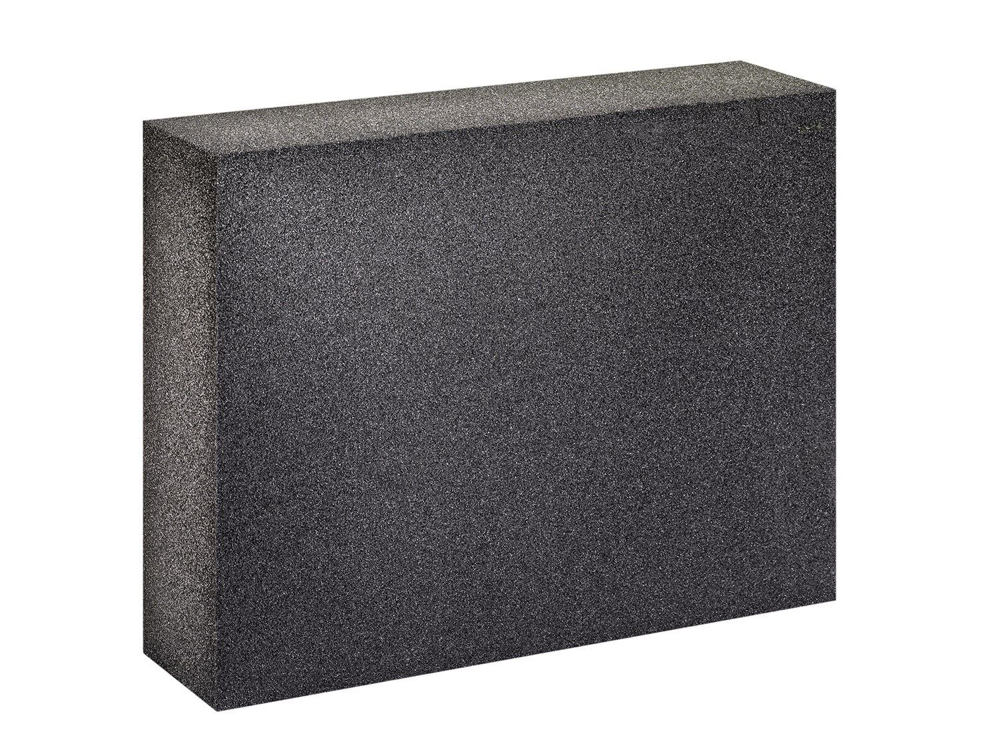
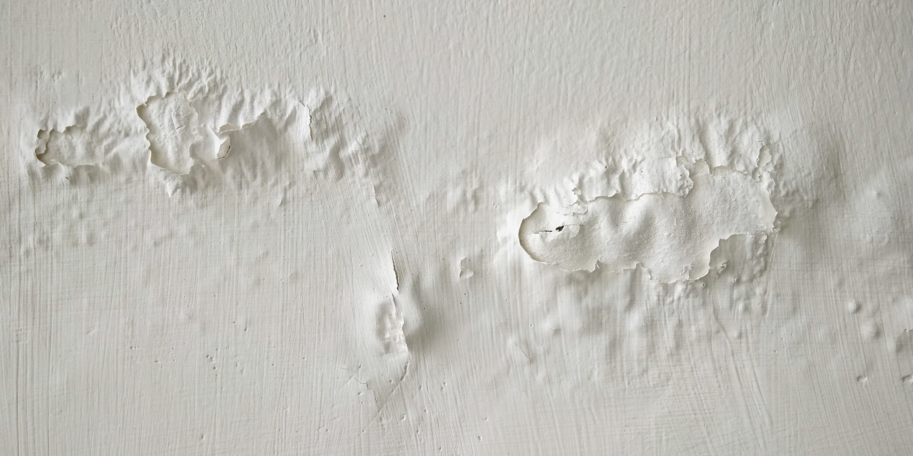
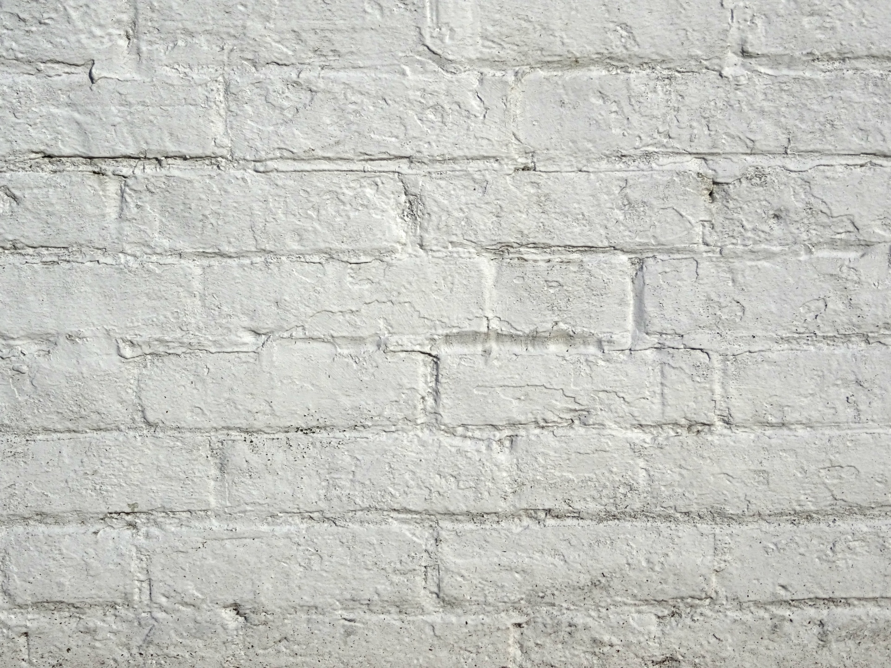
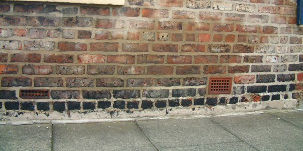

Dampdicht systeem

Systeem A — Schuimglas (Foamglas)
Aanbevolen materiaalSchuimglas heeft een volledig gesloten celstructuur en is volledig waterdamp- en vochtdicht. Het is het enige isolatiemateriaal dat volkomen onvatbaar is voor vocht, zouten en micro-organismen.
λ-waarde: 0,038 W/mK | Dikte Rd 1,75: ± 7 cm | Prijs: 60–100 €/m²
Voordelen: Volledig vocht- en dampdicht, bestand tegen zouten, onbrandbaar (A1), levensduur +50 jaar.
Aandachtspunten: Hoogste prijs, moeilijker te verwerken, ondergrond moet volledig droog zijn bij plaatsing.

Systeem A — PIR-platen
Alternatief bij beperkte ruimtePIR is een hard schuimisolatiemateriaal met een zeer lage lambdawaarde. De platen zijn zelf dampremmend en vormen bij correcte verlijming en afdichting van naden een goed dampscherm.
λ-waarde: 0,022 W/mK | Dikte Rd 1,75: ± 6 cm | Prijs: 20–35 €/m²
Voordelen: Dunste optie, goede prijs-kwaliteit, eenvoudig te verwerken.
Aandachtspunten: Brandbaar (B-C), naden zorgvuldig afdichten, niet bij actieve vochtproblemen.
Capillair actief systeem

Systeem B — Calciumsilicaat
Aanbevolen materiaalCalciumsilicaatplaten zijn mineraal, capillair actief en dampopen. Ze verhogen de wandtemperatuur waardoor condensvorming en schimmelvorming worden vermeden.
λ-waarde: 0,065 W/mK | Dikte Rd 1,75: ± 11 cm | Prijs: 30–60 €/m²
Voordelen: Capillair actief en dampopen, brandveilig (A1), compatibel met kalkpleister.
Toepasbaarheid: Breed toepasbaar bij historische massieve muren, ook bij lichte vochtbelasting. Meest aanbevolen voor erfgoedcontext.

Systeem B — Houtvezelplaten
Alternatief — ecologischHoutvezelplaten zijn biobased, dampopen en capillair actief. Ze hebben een hoge warmteopslagcapaciteit en goede geluidsdempende eigenschappen.
λ-waarde: 0,036–0,047 W/mK | Dikte Rd 1,75: ± 9 cm | Prijs: 11–25 €/m²
Voordelen: Ecologisch en biobased, goede vochtregulatie, betaalbaar, zomers comfort.
Aandachtspunten: Niet bij hoge regenbelasting of vochtinfiltratie, vereist dampopen afwerking.

Systeem B — Kalkhennepblokken
Alternatief — meest compatibelKalkhennep is een mengsel van hennepscheven en kalk. Het is volledig dampopen, capillair actief en het meest compatibel met de bouwfysica van historische muren.
λ-waarde: 0,071 W/mK | Dikte Rd 2,5: ± 20 cm | Prijs: Variabel
Voordelen: Meest compatibel met historische muren, volledig dampopen, gezond binnenklimaat, ecologisch.
Aandachtspunten: Grootste dikte vereist, niet bij regendoorslag, laagste isolatiewaarde per cm.
Overzichtstabel materialen
| Materiaal | Systeem | λ (W/mK) | Dikte Rd 1,75 | Prijs incl. plaatsing | Brandklasse | Beste muursituatie |
|---|---|---|---|---|---|---|
| Schuimglas (Foamglas) | Dampdicht | 0,038 | ± 7 cm | 60–100 €/m² | A1 | Na sanering vocht/zout, droge muur |
| PIR-platen | Dampdicht | 0,022 | ± 6 cm | 20–35 €/m² | B–C | Droge muur, N/O oriëntatie, beperkte ruimte |
| Calciumsilicaat | Capillair actief | 0,065 | ± 11 cm | 30–60 €/m² | A1 | Breed toepasbaar, lichte vochtbelasting |
| Houtvezelplaten | Capillair actief | 0,036–0,047 | ± 9 cm | 11–25 €/m² | D | Droge muur, N/O oriëntatie, ecologisch |
| Kalkhennepblokken | Capillair actief | 0,071 | ± 20 cm | Variabel | B | Droge muur, voldoende ruimte beschikbaar |